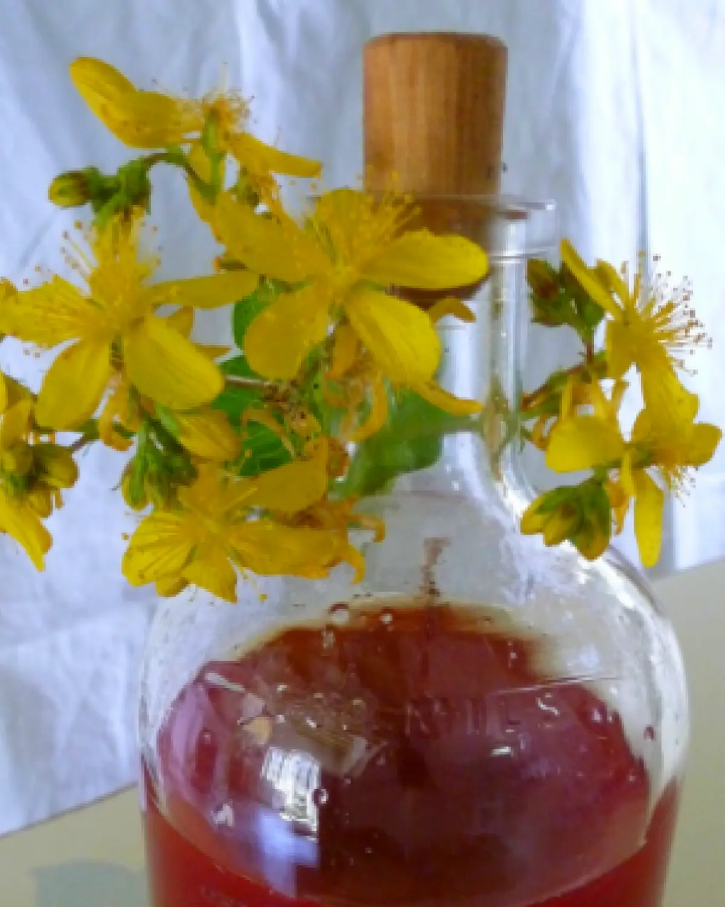

ΤΕΣΣΕΡΑ
Σπαθόλαδο
Το σπαθόλαδο — λάδι από βαλσαμόχορτο — είναι γνωστό για τις πολλές του ιδιότητες. Ήταν διάσημο γιατρικό των αρχαίων Σπαρτιατών, που θεράπευαν με αυτό τις πληγές τους μετά τη μάχη, και παραμένει «απαραίτητο φάρμακο» από τα πολύ παλιά χρόνια ως τις μέρες μας.
Τα λουλούδια ανθίζουν από τις αρχές Μαΐου ως τον Ιούνιο. Το φυτό, επιστημονικά Hypericum (υπερικό), είναι από τα πιο κοινά λουλούδια της ελληνικής χλωρίδας και φυτρώνει σε ακαλλιέργητα χωράφια. Ξεχωρίζει όχι μόνο για το έντονο κίτρινο χρώμα του αλλά και για τις αντικαταθλιπτικές, αντισηπτικές, αντιοξειδωτικές, αντιφλεγμονώδεις, στυπτικές και επουλωτικές ιδιότητές του. Βοηθά επίσης σε ισχιαλγία, ρευματικούς πόνους, πόνους στις αρθρώσεις, μώλωπες και εγκαύματα πρώτου βαθμού, και είναι ιδανικό για θεραπευτικό και χαλαρωτικό μασάζ.
Η παρασκευή του είναι απλή. Το λουλούδι πρέπει να κόβεται το πρωί και να χρησιμοποιείται φρεσκοκομμένο. Το σπαθόλαδο ωριμάζει στον ήλιο για περίπου 40 μέρες, μουλιάζοντας σε ελαιόλαδο υψηλής ποιότητας, και παίρνει βαθύ κόκκινο χρώμα πριν αποθηκευτεί σε φωτεινό σημείο.
Εδώ επιμένουμε σε αυτό: το μυστικό βρίσκεται στο ελαιόλαδο, και χρησιμοποιούμε το λάδι που παράγουμε εμείς οι ίδιοι. Το σπαθόλαδο που κυκλοφορεί αλλού είναι συχνά κακής ποιότητας, φτιαγμένο με διάφορους σπόρους και σπορέλαια που του δίνουν αφύσικο χρώμα. Δεν πρέπει ποτέ να φυλάσσεται σε πλαστικό — μόνο σε γυαλί — και διατηρείται για περίπου ένα χρόνο.
ΣΗΜΕΙΩΣΗ: Το λάδι δεν πρέπει να χρησιμοποιείται κατά τη διάρκεια της ημέρας στον ήλιο, ούτε από εγκύους.